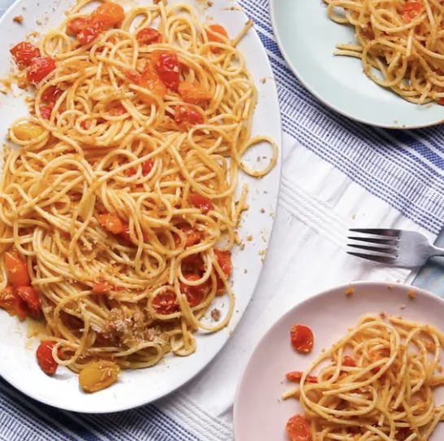

Tomato And Anchovy Pasta

Description
Ingredients
- Unsalted butter
- anchovies
- panko breadcrumbs
- parmigiano cheese
- olive oil
- garlic
- salt
- white wine
- spaghetti
- lemon zest
Steps
- Melt the butter in a large skillet over medium heat. Add 4 of the chopped anchovy filets and cook for 1 minute, until they begin to melt.
- Add the panko bread crumbs and cook for 3 minutes, stirring frequently, until golden brown. Transfer the bread crumbs to a medium bowl and let cool to room temperature. Once cooled, toss with the Parmigiano-Reggiano cheese.
- Heat ¼ cup (60 ml) of olive oil in a medium saucepan over medium-high heat. Once the oil begins to shimmer, add the remaining 6 anchovies and cook for 2 minutes, stirring frequently, until the anchovies begin to melt into the oil.
- Add the garlic and red pepper flakes and cook for 30 seconds, until fragrant.
- Add the tomatoes and stir to coat in the oil. Season with 1 teaspoon of salt and cook for 5 minutes, or until the tomatoes just begin to soften.
- Add the white wine and reduce the heat to low. Cook for 5 minutes, or until the sauce is reduced by half.
- Add cooked pasta and reserved cooking water to the pot with the tomatoes and stir to combine. Cook for 1 minute, until the pasta is well coated and saucy. Drizzle with the remaining tablespoon of olive oil and season with salt. Toss to coat.
- Serve the pasta topped with the anchovy bread crumbs and lemon zest and enjoy!